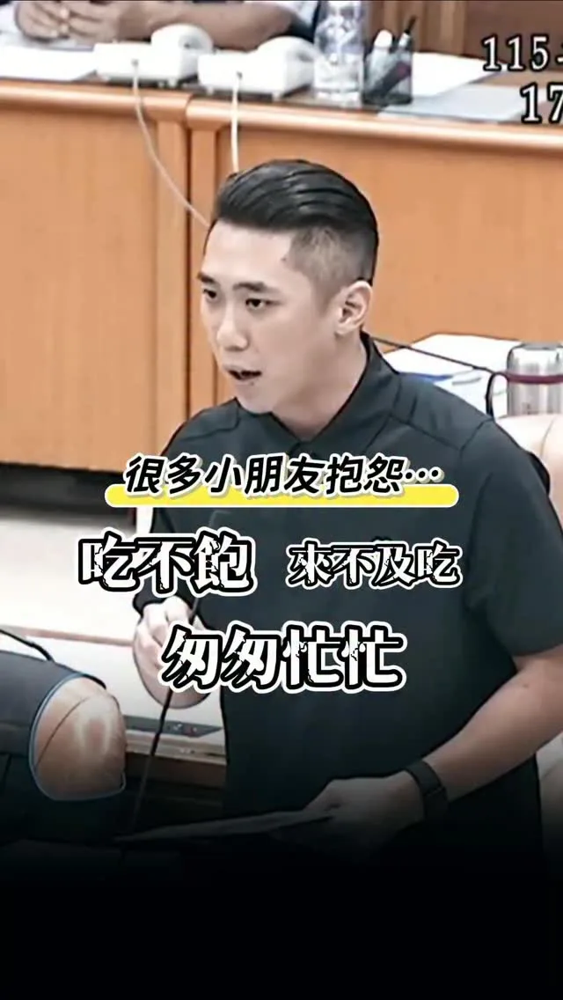

@schuanglawyer:法律人杰伴同行 .ᐟ 律師後援會成立⚖️ 桃園的公共事務，需要更多法律專業的律師朋友交流與參與！10/16(五)邀請法律界律師夥伴齊聚，分享對桃園城市發展、公共政策與法治議題的觀察與想法💡 法律人杰伴交流，為桃園帶來更多專業觀點！ 【律師後援會成立 .ᐟ 】 活動時間｜10/16（五） 參加資格｜限具律師身分者 報名方式｜採事前報名制 報名連結請見留言👇🏻
Posts
@schuanglawyer:法律人杰伴同行 .ᐟ 律師後援會成立⚖️ 桃園的公共事務，需要更多法律專業的律師朋友交流與參與！10/16(五)邀請法律界律師夥伴齊聚，分享對桃園城市發展、公共政策與法治議題的觀察與想法💡 法律人杰伴交流，為桃園帶來更多專業觀點！ 【律師後援會成立 .ᐟ 】 活動時間｜10/16（五） 參加資格｜限具律師身分者 報名方式｜採事前報名制 報名連結請見留言👇🏻


土地，是高雄人的家，不是隨意傾倒廢棄物的地方。 9月14日，我的團隊接到網路陳情，反映永安一處農地疑似遭大量堆置廢棄物。隔天，我和許采蓁議員的團隊立即到場勘查，沒想到眼前景象令人觸目驚心，近1800坪的農地，堆滿廢土、廢木材，堆置量約1.5萬立方公尺，換算起來，足足可以填滿6座奧運標準游泳池。周邊還是一片綠油油的稻田，原本的良田，卻成了一座廢棄物山。 今天，許采蓁議員也在市議會質詢揭發這起案件。市府表示早在去年12月就已經發現相關情況，今年年初也已將業者移送檢調，7月底要求提出清理計畫，卻要等到今年底才能完成清除。但該地在今年8月甚至還曾經發生火災燃燒。 我要問的是，既然去年就已經掌握，為什麼問題還能一路拖到今年？為什麼在已經發現、已經列管、甚至移送檢調之後，現場仍然持續堆置，甚至還發生火災？ 今天團隊再到現場查看，廢木材依然大量堆置、露天曝曬。這也正是我認為高雄現在最需要檢討的地方。不能每次都是等到事情發生、等到地方民眾陳情、等到民代調查，甚至引發大家關注之後，才開始處理。 美濃大峽谷、小港柏油山、燕巢垃圾山、田寮垃圾山，再到今天的永安廢材山。一塊又一塊土地被破壞，難道都要等到地方民眾陳情、民代調查，甚至引發大家關注之後，才開始處理？令人無法接受。 高雄要發展，但發展不能建立在犧牲土地與環境的代價上。高雄人的家園，不能任由廢棄物一座座堆起來。土地只有一塊，破壞了就很難恢復。我們不能再讓「發現一處、處理一處」成為常態，更不能只停留在事後查處。 真正要做的是把事前防範做好，強化監測、巡查、稽查與跨局處通報，對於已經列管的案件，也不能只是開單、移送之後就放著，而是要持續追蹤到真正改善為止。 未來如果我承擔市長的責任，我會要求相關局處加強查緝與後續追蹤，建立更完整的預警與巡查機制，在問題還沒有擴大以前，就先發現、先處理。該追查的要追查，該清除的要立即清除，更要把監測、稽查和責任追究真正做起來。 高雄的土地，不能再這樣被糟蹋。 無論他們掛上多少抹黑的看板，我們都不會被轉移焦點，該追查的責任，我們一定追到底。未來我也不會讓這樣的事情，一再發生。

20260922 台南市近三年累計開出高達 145萬張交通罰單...生不如死..龍介提出最強婚育宅！網友問「烏樹林暫置場」有沒有弊案？有沒有民意代表介入？ @longmedia ｜龍介的直播


「你今天在新莊棒球場附近有找到車位嗎？」、「你在新莊棒球場周圍有被塞到嗎？」 新莊棒球場周邊停車問題及亂象長期困擾球迷及在地居民，但市府跟我說「車位充足而且還多出一千多格。」擺明睜眼說瞎話！所以我拍給大家看有球賽時球場周邊交通跟球迷、居民的心聲，大家抱怨沒車位、甚至為停車打架，狠狠打臉市府說法！ 我向市府提出，「中港國小可改建體育館並蓋地下停車場。」因中港國小周邊也是長年缺乏車位，加上球賽時更是一位難尋，如果中港國小蓋地下停車場，就能讓在地居民停車，新莊體育場周邊的車格則能釋放出給球迷們，減少停車亂象。 我從去年起不斷向市府提議，無奈市府推三阻四。或許就像影片裡的阿姨說的，叫市府自己來看，而非坐在辦公室裡看報告。而我，會繼續爭取到底！ 城市新莊先 新莊陳世軒 請讓我繼續為新莊做事💪


0922受訪-2 #受訪 #影視座談會 #問A答A #民調 #城市願景 #學霸中二阿宅 #鄭朝方 #城市好設計帶來好效應 #「開罰不是保護，制度才要補洞」 #蘇巧慧 #雙北市長選舉 #回歸專業

Opposition Parties Pass "Fiscal Revenue and Expenditure Act," Giving Tainan an Extra $16.3 Billio...

市民一起來當市長！「反應問題」龍介就來處理

@prof.kochihen:今天站在台上的，一位是工程師、一位是律師，而我是老師。我們來自不同領域，但有共同信念，讓專業回歸市政，把人民放在第一位。 高雄不屬於任何政黨，高雄屬於所有高雄人。這場選舉，不只是選一位市長，更是在決定高雄下一個階段要往哪裡走。 我們一起站在這裡祈求一個可以服務鄉里的機會，不要製造世代對立，也懇請大家支持我們所有議員和里長，我們絕對全心以高雄為榮，讓全台灣、全世界看到高雄。 鳳山吹起的風，我相信會吹向整個高雄，讓我們的勝選 政黨輪替、 再創奇蹟。

「免費 #營養午餐 」的本意應該是讓每位學生吃得好又吃得飽，但怎麼反讓小孩喊餓？爸媽一問之下才發現，原來是小孩在學校沒時間吃營養午餐，根本吃不飽，還製造一大堆廚餘！ 我收到許多家長反映，小孩上半天課，規定12:00-12:40在校吃營養午餐，以某小學為例： 👷12:05 打菜完用餐。 👷12:15 收拾餐具倒廚餘。 👷12:30 收書包離開教室 真正吃飯時間只有十分鐘，小朋友哪吃得完？尤其小一、二生，四天是半天課，難怪幾乎天天喊餓。 這次的總預算報告質詢，我向 #侯友宜 市長及教育局長張明文反映，希望儘速調整用餐時間，有妥適的配套，讓學童們能好好的吃營養午餐，不要讓孩子們像急行軍一樣。局長承諾會盡快與學校討論調整，市長也說會盡快改善現行的安排。 吃飽吃好是孩子健康成長的權益，市府花70億辦免費營養午餐，不該讓小朋友沒時間吃飯又挨餓，營養午餐直接變廚餘。我會繼續追蹤，把該有的午餐時間還給小朋友們。 #城市新莊先 #新莊陳世軒 #請讓我繼續做事

780支瘦瘦針，私賣到只剩5支，市府只罰10萬，這樣就想交差？ 新化區衛生所長吳政達以衛生所名義採購780支、市值超過千萬的瘦瘦針，私下轉賣給家人、親友及同事。最後所內只剩5支，其餘775支沒有處方、沒有病歷，連完整流向都交代不清。 面對質疑，吳政達只用一句「成本價提供、自己沒有賺錢」替自己辯解。 這款說法，叫台南鄉親怎麼相信？私下把處方藥賣給親友、同事，本身就已經離譜，何況高達775支藥品去向不明。780支不是三支、五支，光靠一句「沒有牟利」，就想把事情帶過。既然沒有賺錢，完整付款紀錄在哪裡？哪些人拿到藥品、各拿幾支、付了多少錢？不能只靠一句話，就要大家吞下去。 離譜的是，面對這起案件，市府目前只依《藥事法》開罰10萬元、移送廉政署，台南檢調卻沒有第一時間介入。直到媒體踢爆、輿論炸鍋，台南地檢署才主動分案調查。 這件代誌，不只是違反《藥事法》。檢調必須查清楚，背後是否涉及圖利、利用職務詐取財物，甚至侵占公有財物等貪污重罪。這些罪名動輒面臨5年、7年，甚至10年以上刑責，豈是一張10萬元罰單就能輕輕放下？ 龍介要問黃偉哲市長，衛生局五月、六月就已經兩度稽查，為什麼沒有立即將完整事證送交檢調？如果媒體沒有揭露，是不是罰完10萬元、送個廉政署，就準備摸摸鼻子、輕輕放下？ 檢方既已分案，就應盡速清查金流、採購文件及藥品流向，查明是否還有其他衛生局、衛生所人員涉入。該搜索就搜索、該扣押就扣押；若犯罪嫌疑重大，又有逃亡、串證或滅證之虞，就應依法聲押。 司法不能每次碰到民進黨執政的台南，就先等等、看一看。鄉親要的是不看顏色、該查就查、該辦就辦的司法！

法律人杰伴同行 .ᐟ 律師後援會成立⚖️ 桃園的公共事務，需要更多法律專業的律師朋友交流與參與！10/16(五)邀請法律界律師夥伴齊聚，分享對桃園城市發展、公共政策與法治議題的觀察與想法💡 法律人杰伴交流，為桃園帶來更多專業觀點！ 【律師後援會成立 .ᐟ 】 活動時間｜10/16（五） 參加資格｜限具律師身分者 報名方式｜採事前報名制 報名連結請見留言👇🏻

土地，是高雄人的家，不是隨意傾倒廢棄物的地方。 9月14日，我的團隊接到網路陳情，反映永安一處農地疑似遭大量堆置廢棄物。隔天，我和許采蓁議員的團隊立即到場勘查，沒想到眼前景象令人觸目驚心，近1800坪的農地，堆滿廢土、廢木材，堆置量約1.5萬立方公尺，換算起來，足足可以填滿6座奧運標準游泳池。周邊還是一片綠油油的稻田，原本的良田，卻成了一座廢棄物山。 今天，許采蓁議員也在市議會質詢揭發這起案件。市府表示早在去年12月就已經發現相關情況，今年年初也已將業者移送檢調，7月底要求提出清理計畫，卻要等到今年底才能完成清除。但該地在今年8月甚至還曾經發生火災燃燒。 我要問的是，既然去年就已經掌握，為什麼問題還能一路拖到今年？為什麼在已經發現、已經列管、甚至移送檢調之後，現場仍然持續堆置，甚至還發生火災？ 今天團隊再到現場查看，廢木材依然大量堆置、露天曝曬。這也正是我認為高雄現在最需要檢討的地方。不能每次都是等到事情發生、等到地方民眾陳情、等到民代調查，甚至引發大家關注之後，才開始處理。 美濃大峽谷、小港柏油山、燕巢垃圾山、田寮垃圾山，再到今天的永安廢材山。一塊又一塊土地被破壞，難道都要等到地方民眾陳情、民代調查，甚至引發大家關注之後，才開始處理？令人無法接受。 高雄要發展，但發展不能建立在犧牲土地與環境的代價上。高雄人的家園，不能任由廢棄物一座座堆起來。土地只有一塊，破壞了就很難恢復。我們不能再讓「發現一處、處理一處」成為常態，更不能只停留在事後查處。 真正要做的是把事前防範做好，強化監測、巡查、稽查與跨局處通報，對於已經列管的案件，也不能只是開單、移送之後就放著，而是要持續追蹤到真正改善為止。 未來如果我承擔市長的責任，我會要求相關局處加強查緝與後續追蹤，建立更完整的預警與巡查機制，在問題還沒有擴大以前，就先發現、先處理。該追查的要追查，該清除的要立即清除，更要把監測、稽查和責任追究真正做起來。 高雄的土地，不能再這樣被糟蹋。 無論他們掛上多少抹黑的看板，我們都不會被轉移焦點，該追查的責任，我們一定追到底。未來我也不會讓這樣的事情，一再發生。

黨派立場可以不同，但讓台北變得更好，是台北人共同的心願。 ⠀ 在南港的實體「市長，你給我聽好了！」活動，我們收到好多市民的提問與建議。現場來不及回答的問題，我會和團隊一題題整理、認真討論，作為後續研擬政策的依據。 ⠀ 無論你支持什麼政黨，或對我有不同的評價，我都想聽你對台北的想法。 ⠀ 你出題，我會認真聽、好好回答，一起討論讓台北更好。 ⠀ 下一站在哪裡？ 敬請期待 ⠀⠀⠀ #市長你給我聽好了 #台北順起來 #你的市長沈伯洋

中橫，是大梨山鄉親回家的路，也是農產運輸的重要交通命脈。 今天到 #谷關工務段 視察 #台8線臨37便道 工程進度。從我擔任立委開始，我就持續為中橫便道安全爭取建設經費，#累計超過26億元，這次再爭取3.7億元，推動4處高風險路段鋼便橋改建。目前整體進度34.1%，0.2K、0.8K及4.8K預計116年年中完工，8.4K則力拚117年完成。 短期的安全改善要加快，長期的中橫復建更不能停！我也要求相關單位，務必以118年前完成綜合規劃與環評為目標，朝126年完工持續推進。 #中橫復建 是一條很長的路，但只要工程向前推進一步，鄉親回家的路就更安全一步。我會繼續盯進度、爭預算，讓這條交通命脈盡快完工！ #臺中啟程 #打造旗艦城
很多市民最近去新莊的後港新公園，都說變得更寬敞舒適，而且還有新設施！這次我爭取到300萬元建議款，將後港新公園改造升級： 🌳 草坪溜滑梯增設遮陽，這是前年我質詢要求盤點新莊加裝遮陽的三座公園之一，如今總算完成，小朋友不必在大太陽下遊玩。 🌳 新增夜間水紋燈，透過波紋的光影變化，為公園增添氣氛。 🌳 人工草皮翻新。 🌳 打掉舊有造景，釋出空間，讓公園更開闊。 從規劃到細部設計，我及團隊與後德里劉臺鳳里長 參與公所會議，討論、確認細節，要給市民更好的休憩場所。但我去後港新公園看完工成果時，發現 公園地面龜裂、植栽沒修剪、草坪出現裸土枯草等問題，已請公所儘速改善。我會追蹤後續，並持續優化新莊的公園，為大小朋友們打造優質、安心的休閒場域。 城市新莊先 新莊陳世軒 請讓我繼續為新莊做事💪

@hsiehlungchieh:在野黨通過《財劃法》讓台南一年增163億預算！行政院版本連計算公式都沒有

@hsiehlungchieh:市民一起來當市長！「反應問題」龍介就來處理


聯合競總從永和出發！感謝 #許昭興 議員今天成立和我的永和聯合競選總部，我也向大家報告，未來我們會成立 #都市更新局 打造 #簡政便民 都審程序，加速都更，同時盤點學校、公園地下空間，#增設停車場，也要 #完善公車路網，持續改善地方的交通環境。 許多人來到北台灣打拚，第一個選擇落腳的地方就是永和，也因此這裡匯聚了不同時代、不同族群人們的文化，多元、共榮，正是永和最美麗的人文風貌。 我們會讓永和更好，讓永和人更喜歡這裡的生活，也讓更多人看見永和的文化底蘊。 接下來巧慧會陸續在新北29區成立聯合競選總部，最後70天，新北隊一起衝，迎接新北新時代！


城市交流，讓經驗彼此加乘 今天 劉建國 委員來到台南做市政交流，亭妃與黃偉哲市長一起出席，從小黃公車、國產豆奶、親子悠遊館等議題交換意見，藉著分享黃偉哲市長台南的實務經驗，也聽聽雲林未來劉縣長的想法與做法。 城市進步沒有標準答案，透過交流彼此學習，把好的經驗帶回地方，讓台南、雲林一起更好！ #陳亭妃 #市政交流 #經驗分享 #台南雲林一起努力


780支瘦瘦針，私賣到只剩5支，市府只罰10萬，這樣就想交差？ 新化區衛生所長吳政達以衛生所名義採購780支、市值超過千萬的瘦瘦針，私下轉賣給家人、親友及同事。最後所內只剩5支，其餘775支沒有處方、沒有病歷，連完整流向都交代不清。 面對質疑，吳政達只用一句「成本價提供、自己沒有賺錢」替自己辯解。 這款說法，叫台南鄉親怎麼相信？私下把處方藥賣給親友、同事，本身就已經離譜，何況高達775支藥品去向不明。780支不是三支、五支，光靠一句「沒有牟利」，就想把事情帶過。既然沒有賺錢，完整付款紀錄在哪裡？哪些人拿到藥品、各拿幾支、付了多少錢？不能只靠一句話，就要大家吞下去。 離譜的是，面對這起案件，市府目前只依《藥事法》開罰10萬元、移送廉政署，台南檢調卻沒有第一時間介入。直到媒體踢爆、輿論炸鍋，台南地檢署才主動分案調查。 這件代誌，不只是違反《藥事法》。檢調必須查清楚，背後是否涉及圖利、利用職務詐取財物，甚至侵占公有財物等貪污重罪。這些罪名動輒面臨5年、7年，甚至10年以上刑責，豈是一張10萬元罰單就能輕輕放下？ 龍介要問黃偉哲市長，衛生局五月、六月就已經兩度稽查，為什麼沒有立即將完整事證送交檢調？如果媒體沒有揭露，是不是罰完10萬元、送個廉政署，就準備摸摸鼻子、輕輕放下？ 檢方既已分案，就應盡速清查金流、採購文件及藥品流向，查明是否還有其他衛生局、衛生所人員涉入。該搜索就搜索、該扣押就扣押；若犯罪嫌疑重大，又有逃亡、串證或滅證之虞，就應依法聲押。 司法不能每次碰到民進黨執政的台南，就先等等、看一看。鄉親要的是不看顏色、該查就查、該辦就辦的司法！


@zenolai:前鎮漁港需要務實對策，不需要「先唱衰、再收割」！ 前鎮漁港是世界級的遠洋漁港，漁獲佔全台九成，前鎮漁港的發展與漁民權益，是我長期關心推動，五大建設81億爭取到位，許多細項也多次召開協調會處理，攤商與船員關切的事項，中央、地方早處理拍板定案。 9月17日，我陪同行政院秘書長@changtunhan 、農業部長陳駿季實地視察，並與陳其邁市長共同討論，漁業署確定公布「兩年試營運計畫」： ✅ 運銷中心攤商兩年免費進駐，依衛生標準與使用需求調整動線、降溫及攤位設備。 ✅ 船員住宿費再爭取降至100元，餘額協調由船東負擔，外籍漁工等同免費入住。 ✅ 改善船員大樓供水、異味、隔音，持續爭取增加接駁公車班次，回應實際需求。 今年度預算藍白主提凍結「漁業發展」預算1000萬元、凍結「漁業管理」預算2000萬元，民眾黨團也凍結7581萬的漁業相關預算。相關言行漁民及高雄市民都看在眼裡。

「車位已經夠難找了，上網查哪有停車位還要被耍！」新北市政府宣傳「新北市路邊停車空位查詢系統、停車大聲公APP、易停網APP」供民眾查停車位，卻無法反映車格現況，本該便民的查詢工具，反而讓市民找出一肚子氣，我乾脆自己去測試，還真的沒有一次是準的！ 因車格仰賴人工收費造成落差，要解決就得建置智慧車格。新北要在2027年一月，將3萬多公有路邊汽車格跟停車場全智慧化，但新莊路邊汽車格只有2191格太少了，所以我總質詢時提出： 🚘 加速智慧車格的布建，以提高周轉率及避免車輛久佔、市民更方便找車位。 🚘 車站、商圈、球場、學校等人潮密集處優先設置，新莊的智慧車格還需要再多。 🚘 查詢網站及APP需優化提供正確即時資訊。 市長侯友宜承諾會改進。便民服務不能做做樣子淪為口號，我會監督市府進度，讓新莊市民不再為找車位繞路或空歡喜，享受真正智慧城市的便利！ 城市新莊先 新莊陳世軒 請讓我繼續為新莊做事💪

@pumashen:黨派立場可以不同，但讓台北變得更好， 是台北人共同的心願。 ⠀ 在南港的實體「市長，你給我聽好了！」活動，我們收到好多市民的提問與建議。 現場來不及回答的問題，我會和團隊一題題整理、認真討論，作為後續研擬政策的依據。 ⠀ 無論你支持什麼政黨，或對我有不同的評價，我都想聽你對台北的想法。 ⠀ 你出題，我會認真聽、好好回答，一起討論讓台北更好。 ⠀ 下一站在哪裡？ 敬請期待 ⠀⠀ #市長你給我聽好了 #台北順起來 #你的市長沈伯洋
@schuanglawyer:黃世杰已經準備好了，張善政呢？我不怕直接辯論市政，但張善政究竟是對這四年的表現沒信心，還是害怕被235萬市民檢視？ 昨天，張善政在議會備詢時，說他不會跟我進行辯論。 我在準備登記書件時，毫不猶豫勾選參加政見發表、且願意接受辯論，希望跟張善政能夠有一場公開交流市政的機會。 因為桃園人實在太悶了，這四年找不到市長、看不到建設、不清楚桃園方向。 這段時日以來，無論我對市政提出任何疑問，張善政幾乎都不正面回應，不然就是請局處首長代打。 如果連民主選舉前的市政辯論，張善政都不願意現身，市民要如何檢視我們對市政問題的理解、政策主張，如何知道我們想把桃園帶到哪裡去？ 桃園市民要看的不是準備好的講稿，而是面對問題時，能不能提出具體答案。 這種「只想單向宣布、不願接受市民提問」的態度，也讓人聯想到近期航空城PCB專區引發的地方爭議。重大產業政策牽涉居民生活與地方發展，本來就應該充分說明、充分溝通。市長選舉也一樣，不能只挑準備好的內容，更應該面對問題、直球回答，讓城市治理方案接受公開檢驗。 所以我要問，張善政究竟是對這四年表現沒信心，還是面對市政問題沒有準備好答案，面對235萬市民會害怕？

@schuanglawyer:最近，我頻繁收到A7居民的反映。大家選擇在這裡落腳，代表對這片新興社區充滿期待。但隨著人口快速成長，各種生活痛點也隨之浮現。 從公園綠地是否充足、公車班次及站點的配置，到孩子的就學需求、污水接管、交通瓶頸，甚至是各項公共設施的建設進度，都是大家最迫切在意的問題。 面對A7重劃區人口急遽增加，市民想知道：市府究竟準備好了嗎？ 這陣子以來，世杰和陳雅倫議員 @yalunchenyalunchen 、李宗豪議員 @tyleehao ，持續針對市民在意的問題，深入討論未來的解方。 昨天我出席樂善里、文樂里和文桃里的中秋活動時，也向大家報告，面對A7重劃區的發展，世杰打算怎麼做！ 世杰深信，市府必須真正看見A7重劃區的急迫需求，加快腳步、提前規劃、積極協調，把民生問題一一解決，讓公共建設跟發展速度一起到位！讓A7動起來，我們一起努力💖

在野黨通過《財劃法》讓台南一年增163億預算！行政院版本連計算公式都沒有

Be the Mayor Together with Me! Report Your Issues and Long Jie Will Handle Them

0919受訪 #受訪 #北投市場 #北市科 #北投文化徑 #河岸改造 #運動驛站 #市政辯論 #愛知·名古屋亞運 #國際打壓 #運動部

@hsiehlungchieh:780支瘦瘦針，私賣到只剩5支，市府只罰10萬，這樣就想交差？ 新化區衛生所長吳政達以衛生所名義採購780支、市值超過千萬的瘦瘦針，私下轉賣給家人、親友及同事。最後所內只剩5支，其餘775支沒有處方、沒有病歷，連完整流向都交代不清。 面對質疑，吳政達只用一句「成本價提供、自己沒有賺錢」替自己辯解。 這款說法，叫台南鄉親怎麼相信？私下把處方藥賣給親友、同事，本身就已經離譜，何況高達775支藥品去向不明。780支不是三支、五支，光靠一句「沒有牟利」，就想把事情帶過。既然沒有賺錢，完整付款紀錄在哪裡？哪些人拿到藥品、各拿幾支、付了多少錢？不能只靠一句話，就要大家吞下去。 離譜的是，面對這起案件，市府目前只依《藥事法》開罰10萬元、移送廉政署，台南檢調卻沒有第一時間介入。直到媒體踢爆、輿論炸鍋，台南地檢署才主動分案調查。 這件代誌，不只是違反《藥事法》。檢調必須查清楚，背後是否涉及圖利、利用職務詐取財物，甚至侵占公有財物等貪污重罪。這些罪名動輒面臨5年、7年，甚至10年以上刑責，豈是一張10萬元罰單就能輕輕放下？

實體の「市長，你給我聽好了！」 ‼️出沒確認‼️ ⠀ 限定快閃，你敢出題，我就接招。 ⠀ 你對台北市政有什麼建議？有什麼提案？ 到現場寫下你的主張，就有機會站上發言台與沈伯洋對話！ ⠀ 地點｜捷運南港展覽館站 2 號出口 日期｜2026年9月17日（今天） 16:30 開放填寫提案單 17:15 快閃發言台，正式開張